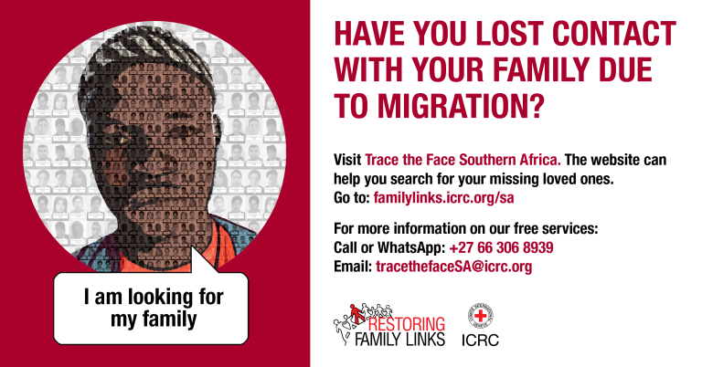
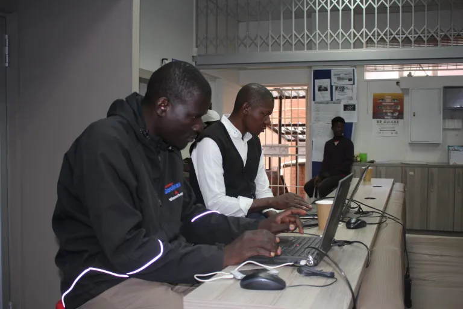
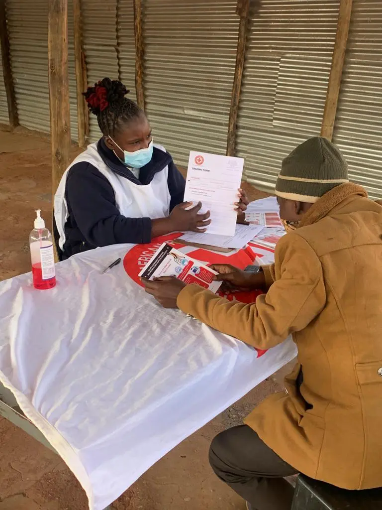

Our Products
Once a tracing request has been opened for you, SARCS can add your photo to the Trace the Face website, with your consent. Trace the Face is a free, online tool to help reconnect family members who have lost contact due to migration. The Trace the Face website contains a vast photo gallery of people over the age of 18 who are looking for their relatives.
Description for TRACE THE FACE.
Vulnerable people, including migrants, can make a free 3-minute national or international phone call to a relative or friend. Thirty-minutes of free Wi-Fi is also offered for people to use to contact relatives. Protecting Family Links (PFL) free services are offered at the following shelters on a weekly basis. Get in touch with the shelter or PFL coordinator in your area to confirm which day they will be there.
Description for PHONE CALL & WIFI ACCESS.
If the contact details and exact location of the sought person are not known, SARCS can open a formal tracing request, provided enough information is given to us. In this case, SARCS will try to trace the missing relative’s whereabouts and/or offer the relative protection and assistance.
Description for TRACING REQUEST.
